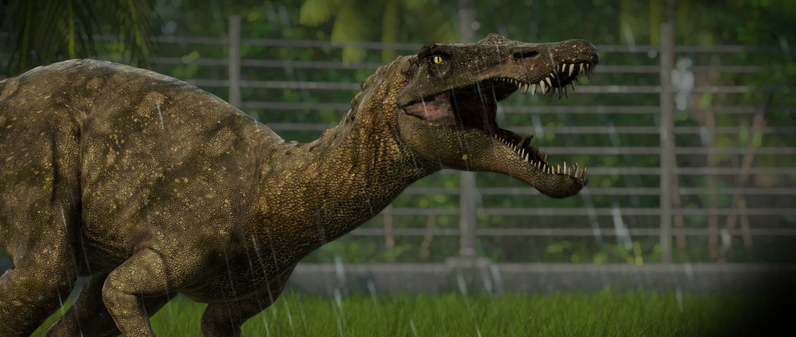

O grande terópode Barionix pode ter até 10 m de comprimento e é conhecido por suas mandíbulas parecidas com as de um crocodilo. Ele é primariamente piscívoro; embora viva na terra, pode pegar peixes de rios com suas longas garras e nadar em águas rasas para capturar presas com seus longos dentes serrilhados. Acredita-se que o Barionix também seja um necrófago, alimentando-se das carcaças de dinossauros menores em terra.